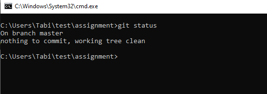

These are the following commands that we are going to use

Git Init

It will initialize a local repository in the system
Git Add
It will add all the files to the repository
Git Commit
It will comit the changes to track with message
Git Status

It will tell us about the status of the repository
Git Branch
It will tell us about the branch in which we are working
Adding Url
Git Push
It will push all the files to the server
Git Branch
It create a new branch and switched to that branch
Git Merge
It will merge the branch index with main